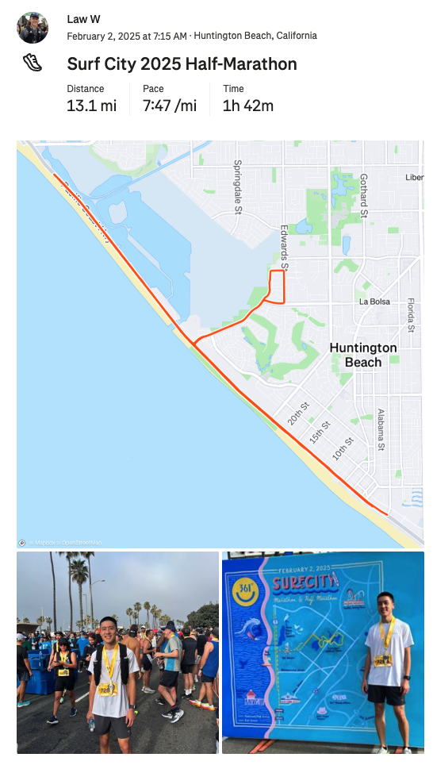

Second Half-Marathon in the Books

Second half-marathon complete (Strava)! Goals for this race at Surf City 2025 was just to 1) not get injured and 2) beat my first HM time of 1:49. Felt like the conditions were perfect in terms of the weather, how the body felt and having other runners to run with at certain points. Thankful to have achieved both those goals! By God’s grace was able to PR and run 1:42.

Strategy was to go 8:00-8:05 for the first 10 miles. But I started following people who were going around 7:50-7:55. Felt strong and just raced the last 5k. The ending was a little sketchy because the 5k walkers were in our path so lot of weaving in and out.
I did prefer the Long Beach Half. Better course (closer to the water) and better organized.
My chip time didn’t register :(
Marathon Build Details
This build started 10/17/24 and ended 2/2/2024 at Surf City:
- 16 weeks
- 484 total miles
- 28.6 miles on average per week
- 80.2 total hours
- 4.84 hours per week
- 97 runs
- 1 race, 13 long, 26 workouts, 58 easy
- Conversational pace improvement - 9:42/mi to 9:09/mi
Thoughts on Runna
I used Runna for the 16 week training plan and I really liked it. It pushed me pretty hard. There were many workouts I didn’t think I’d be able to do. Runna also adapted the paces according to how I performed during the speed work. I thought their estimates fluctuated too quickly. The VDOT estimated paces were more in-line. For example the 5k time-trial I did in December gave a VDOT estimated HM time of 1:44 which was really close. The training plan had a variety of runs (for easy, workouts and long) that kept things interesting. Although now that I’ve gone through this full plan once, I likely can use ChatGPT to create plans for myself now. Runna recently allowed syncing workouts using the native Apple Workouts app which was really nice.